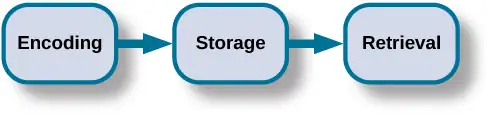
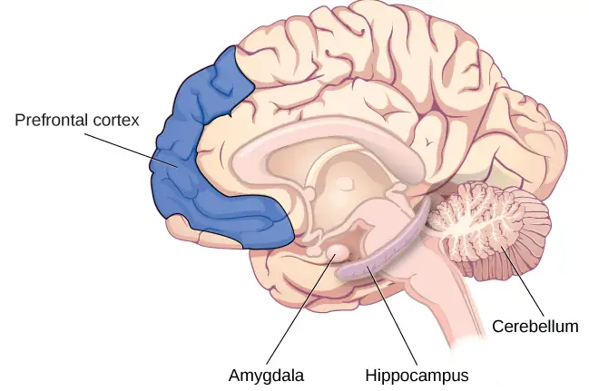
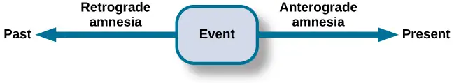
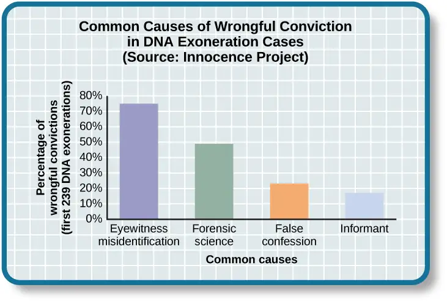
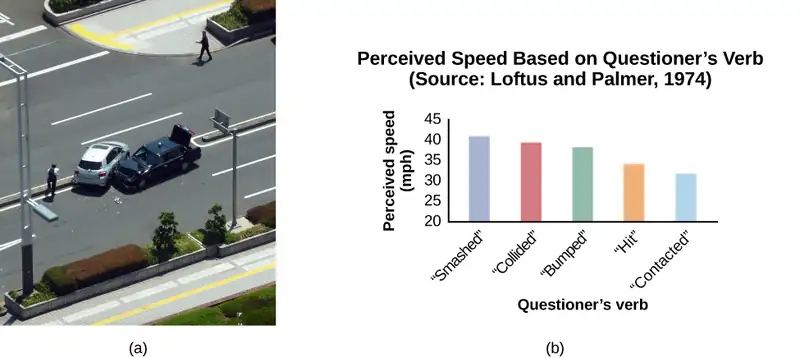
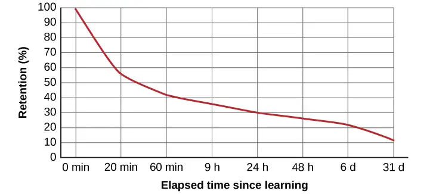

Chapter 8: Memory¶
Introduction¶
We may be top-notch learners, but if we don’t have a way to store what we’ve learned, what good is the knowledge we’ve gained?
Take a few minutes to imagine what your day might be like if you could not remember anything you had learned. You would have to figure out how to get dressed. What clothing should you wear, and how do buttons and zippers work? You would need someone to teach you how to brush your teeth and tie your shoes. Who would you ask for help with these tasks, since you wouldn’t recognize the faces of these people in your house? Wait . . . is this even your house? Uh oh, your stomach begins to rumble and you feel hungry. You’d like something to eat, but you don’t know where the food is kept or even how to prepare it. Oh dear, this is getting confusing. Maybe it would be best to just go back to bed. A bed . . . what is a bed?
We have an amazing capacity for memory, but how, exactly, do we process and store information? Are there different kinds of memory, and if so, what characterizes the different types? How, exactly, do we retrieve our memories? And why do we forget? This chapter will explore these questions as we learn about memory.
8.1 How Memory Functions¶
Learning Objectives
By the end of this section, you will be able to:
- Discuss the three basic functions of memory
- Describe the three stages of memory storage
- Describe and distinguish between procedural and declarative memory and semantic and episodic memory
Memory is an information processing system; therefore, we often compare it to a computer. Memory is the set of processes used to encode, store, and retrieve information over different periods of time (Figure 8.2).

Link to Learning
Watch this video about the neuroscience of memory to learn more.
Encoding¶
We get information into our brains through a process called encoding, which is the input of information into the memory system. Once we receive sensory information from the environment, our brains label or code it. We organize the information with other similar information and connect new concepts to existing concepts. Encoding information occurs through automatic processing and effortful processing.
If someone asks you what you ate for lunch today, more than likely you could recall this information quite easily. This is known as automatic processing, or the encoding of details like time, space, frequency, and the meaning of words. Automatic processing is usually done without any conscious awareness. Recalling the last time you studied for a test is another example of automatic processing. But what about the actual test material you studied? It probably required a lot of work and attention on your part in order to encode that information. This is known as effortful processing (Figure 8.3).
What are the most effective ways to ensure that important memories are well encoded? Even a simple sentence is easier to recall when it is meaningful (Anderson, 1984). Read the following sentences (Bransford & McCarrell, 1974), then look away and count backwards from 30 by threes to zero, and then try to write down the sentences (no peeking back at this page!).
- The notes were sour because the seams split.
- The voyage wasn't delayed because the bottle shattered.
- The haystack was important because the cloth ripped.
How well did you do? By themselves, the statements that you wrote down were most likely confusing and difficult for you to recall. Now, try writing them again, using the following prompts: bagpipe, ship christening, and parachutist. Next count backwards from 40 by fours, then check yourself to see how well you recalled the sentences this time. You can see that the sentences are now much more memorable because each of the sentences was placed in context. Material is far better encoded when you make it meaningful.
There are three types of encoding. The encoding of words and their meaning is known as semantic encoding. It was first demonstrated by William Bousfield (1935) in an experiment in which he asked people to memorize words. The 60 words were actually divided into 4 categories of meaning, although the participants did not know this because the words were randomly presented. When they were asked to remember the words, they tended to recall them in categories, showing that they paid attention to the meanings of the words as they learned them.
Visual encoding is the encoding of images, and acoustic encoding is the encoding of sounds, words in particular. To see how visual encoding works, read over this list of words: car, level, dog, truth, book, value. If you were asked later to recall the words from this list, which ones do you think you’d most likely remember? You would probably have an easier time recalling the words car, dog, and book, and a more difficult time recalling the words level, truth, and value. Why is this? Because you can recall images (mental pictures) more easily than words alone. When you read the words car, dog, and book you created images of these things in your mind. These are concrete, high-imagery words. On the other hand, abstract words like level, truth, and value are low-imagery words. High-imagery words are encoded both visually and semantically (Paivio, 1986), thus building a stronger memory.
Now let’s turn our attention to acoustic encoding. You are driving in your car and a song comes on the radio that you haven’t heard in at least 10 years, but you sing along, recalling every word. In the United States, children often learn the alphabet through song, and they learn the number of days in each month through rhyme: “Thirty days hath September, / April, June, and November; / All the rest have thirty-one, / Save February, with twenty-eight days clear, / And twenty-nine each leap year.” These lessons are easy to remember because of acoustic encoding. We encode the sounds the words make. This is one of the reasons why much of what we teach young children is done through song, rhyme, and rhythm.
Which of the three types of encoding do you think would give you the best memory of verbal information? Some years ago, psychologists Fergus Craik and Endel Tulving (1975) conducted a series of experiments to find out. Participants were given words along with questions about them. The questions required the participants to process the words at one of the three levels. The visual processing questions included such things as asking the participants about the font of the letters. The acoustic processing questions asked the participants about the sound or rhyming of the words, and the semantic processing questions asked the participants about the meaning of the words. After participants were presented with the words and questions, they were given an unexpected recall or recognition task.
Words that had been encoded semantically were better remembered than those encoded visually or acoustically. Semantic encoding involves a deeper level of processing than the shallower visual or acoustic encoding. Craik and Tulving concluded that we process verbal information best through semantic encoding, especially if we apply what is called the self-reference effect. The self-reference effect is the tendency for an individual to have better memory for information that relates to oneself in comparison to material that has less personal relevance (Rogers, Kuiper, & Kirker, 1977). Could semantic encoding be beneficial to you as you attempt to memorize the concepts in this chapter?
Storage¶
Once the information has been encoded, we have to somehow retain it. Our brains take the encoded information and place it in storage. Storage is the creation of a permanent record of information.
In order for a memory to go into storage (i.e., long-term memory), it has to pass through three distinct stages: Sensory Memory, Short-Term Memory, and finally Long-Term Memory. These stages were first proposed by Richard Atkinson and Richard Shiffrin (1968). Their model of human memory (Figure 8.4), called Atkinson and Shiffrin's model, is based on the belief that we process memories in the same way that a computer processes information.
![A flow diagram consists of four boxes with connecting arrows. The first box is labeled “sensory input.” An arrow leads to the second box, which is labeled “sensory memory.” An arrow leads to the third box which is labeled “short-term memory (STM).” An arrow points to the fourth box, labeled “long-term memory (LTM),” and an arrow points in the reverse direction from the fourth to the third box. Above the short-term memory box, an arrow leaves the top-right of the box and curves around to point back to the top-left of the box; this arrow is labeled “rehearsal.” Both the “sensory memory” and “short-term memory” boxes have an arrow beneath them pointing to the text “information not transferred is lost.”](img/cnx-psych-08-01-atkinson.webp)
Atkinson and Shiffrin's model is not the only model of memory. Baddeley and Hitch (1974) proposed a working memory model in which short-term memory has different forms. In their model, storing memories in short-term memory is like opening different files on a computer and adding information. The working memory files hold a limited amount of information. The type of short-term memory (or computer file) depends on the type of information received. There are memories in visual-spatial form, as well as memories of spoken or written material, and they are stored in three short-term systems: a visuospatial sketchpad, an episodic buffer (Baddeley, 2000), and a phonological loop. According to Baddeley and Hitch, a central executive part of memory supervises or controls the flow of information to and from the three short-term systems, and the central executive is responsible for moving information into long-term memory.
Sensory Memory¶
In the Atkinson-Shiffrin model, stimuli from the environment are processed first in sensory memory: storage of brief sensory events, such as sights, sounds, and tastes. It is very brief storage—up to a couple of seconds. We are constantly bombarded with sensory information. We cannot absorb all of it, or even most of it. And most of it has no impact on our lives. For example, what was your professor wearing the last class period? As long as the professor was dressed appropriately, it does not really matter what she was wearing. Sensory information about sights, sounds, smells, and even textures, which we do not view as valuable information, we discard. If we view something as valuable, the information will move into our short-term memory system.
Short-Term Memory¶
Short-term memory (STM) is a temporary storage system that processes incoming sensory memory. The terms short-term and working memory are sometimes used interchangeably, but they are not exactly the same. Short-term memory is more accurately described as a component of working memory. Short-term memory takes information from sensory memory and sometimes connects that memory to something already in long-term memory. Short-term memory storage lasts 15 to 30 seconds. Think of it as the information you have displayed on your computer screen, such as a document, spreadsheet, or website. Then, information in STM goes to long-term memory (you save it to your hard drive), or it is discarded (you delete a document or close a web browser).
Rehearsal moves information from short-term memory to long-term memory. Active rehearsal is a way of attending to information to move it from short-term to long-term memory. During active rehearsal, you repeat (practice) the information to be remembered. If you repeat it enough, it may be moved into long-term memory. For example, this type of active rehearsal is the way many children learn their ABCs by singing the alphabet song. Alternatively, elaborative rehearsal is the act of linking new information you are trying to learn to existing information that you already know. For example, if you meet someone at a party and your phone is dead but you want to remember his phone number, which starts with area code 203, you might remember that your uncle Abdul lives in Connecticut and has a 203 area code. This way, when you try to remember the phone number of your new prospective friend, you will easily remember the area code. Craik and Lockhart (1972) proposed the levels of processing hypothesis that states the deeper you think about something, the better you remember it.
You may find yourself asking, “How much information can our memory handle at once?” To explore the capacity and duration of your short-term memory, have a partner read the strings of random numbers (Figure 8.5) out loud to you, beginning each string by saying, “Ready?” and ending each by saying, “Recall,” at which point you should try to write down the string of numbers from memory.
Note the longest string at which you got the series correct. For most people, the capacity will probably be close to 7 plus or minus 2. In 1956, George Miller reviewed most of the research on the capacity of short-term memory and found that people can retain between 5 and 9 items, so he reported the capacity of short-term memory was the "magic number" 7 plus or minus 2. However, more contemporary research has found working memory capacity is 4 plus or minus 1 (Cowan, 2010). Generally, recall is somewhat better for random numbers than for random letters (Jacobs, 1887) and also often slightly better for information we hear (acoustic encoding) rather than information we see (visual encoding) (Anderson, 1969).
Memory trace decay and interference are two factors that affect short-term memory retention. Peterson and Peterson (1959) investigated short-term memory using the three letter sequences called trigrams (e.g., CLS) that had to be recalled after various time intervals between 3 and 18 seconds. Participants remembered about 80% of the trigrams after a 3-second delay, but only 10% after a delay of 18 seconds, which caused them to conclude that short-term memory decayed in 18 seconds. During decay, the memory trace becomes less activated over time, and the information is forgotten. However, Keppel and Underwood (1962) examined only the first trials of the trigram task and found that proactive interference also affected short-term memory retention. During proactive interference, previously learned information interferes with the ability to learn new information. Both memory trace decay and proactive interference affect short-term memory. Once the information reaches long-term memory, it has to be consolidated at both the synaptic level, which takes a few hours, and into the memory system, which can take weeks or longer.
Long-term Memory¶
Long-term memory (LTM) is the continuous storage of information. Unlike short-term memory, long-term memory storage capacity is believed to be unlimited. It encompasses all the things you can remember that happened more than just a few minutes ago. One cannot really consider long-term memory without thinking about the way it is organized. Really quickly, what is the first word that comes to mind when you hear “peanut butter”? Did you think of jelly? If you did, you probably have associated peanut butter and jelly in your mind. It is generally accepted that memories are organized in semantic (or associative) networks (Collins & Loftus, 1975). A semantic network consists of concepts, and as you may recall from what you’ve learned about memory, concepts are categories or groupings of linguistic information, images, ideas, or memories, such as life experiences. Although individual experiences and expertise can affect concept arrangement, concepts are believed to be arranged hierarchically in the mind (Anderson & Reder, 1999; Johnson & Mervis, 1997, 1998; Palmer, Jones, Hennessy, Unze, & Pick, 1989; Rosch, Mervis, Gray, Johnson, & Boyes-Braem, 1976; Tanaka & Taylor, 1991). Related concepts are linked, and the strength of the link depends on how often two concepts have been associated.
Semantic networks differ depending on personal experiences. Importantly for memory, activating any part of a semantic network also activates the concepts linked to that part to a lesser degree. The process is known as spreading activation (Collins & Loftus, 1975). If one part of a network is activated, it is easier to access the associated concepts because they are already partially activated. When you remember or recall something, you activate a concept, and the related concepts are more easily remembered because they are partially activated. However, the activations do not spread in just one direction. When you remember something, you usually have several routes to get the information you are trying to access, and the more links you have to a concept, the better your chances of remembering.
There are two types of long-term memory: explicit and implicit (Figure 8.6). Understanding the difference between explicit memory and implicit memory is important because aging, particular types of brain trauma, and certain disorders can impact explicit and implicit memory in different ways. Explicit memories are those we consciously try to remember, recall, and report. For example, if you are studying for your chemistry exam, the material you are learning will be part of your explicit memory. In keeping with the computer analogy, some information in your long-term memory would be like the information you have saved on the hard drive. It is not there on your desktop (your short-term memory), but most of the time you can pull up this information when you want it. Not all long-term memories are strong memories, and some memories can only be recalled using prompts. For example, you might easily recall a fact, such as the capital of the United States, but you might struggle to recall the name of the restaurant at which you had dinner when you visited a nearby city last summer. A prompt, such as that the restaurant was named after its owner, might help you recall the name of the restaurant. Explicit memory is sometimes referred to as declarative memory, because it can be put into words. Explicit memory is divided into episodic memory and semantic memory.
Link to Learning
View this video that explains short-term and long-term memory to learn more about how memories are stored and retrieved.
Episodic memory is information about events we have personally experienced (i.e., an episode). For instance, the memory of your last birthday is an episodic memory. Usually, episodic memory is reported as a story. The concept of episodic memory was first proposed about in the 1970s (Tulving, 1972). Since then, Tulving and others have reformulated the theory, and currently scientists believe that episodic memory is memory about happenings in particular places at particular times—the what, where, and when of an event (Tulving, 2002). It involves recollection of visual imagery as well as the feeling of familiarity (Hassabis & Maguire, 2007). Semantic memory is knowledge about words, concepts, and language-based knowledge and facts. Semantic memory is typically reported as facts. Semantic means having to do with language and knowledge about language. For example, answers to the following questions like “what is the definition of psychology” and “who was the first African American president of the United States” are stored in your semantic memory.
Implicit memories are long-term memories that are not part of our consciousness. Although implicit memories are learned outside of our awareness and cannot be consciously recalled, implicit memory is demonstrated in the performance of some task (Roediger, 1990; Schacter, 1987). Implicit memory has been studied with cognitive demand tasks, such as performance on artificial grammars (Reber, 1976), word memory (Jacoby, 1983; Jacoby & Witherspoon, 1982), and learning unspoken and unwritten contingencies and rules (Greenspoon, 1955; Giddan & Eriksen, 1959; Krieckhaus & Eriksen, 1960). Returning to the computer metaphor, implicit memories are like a program running in the background, and you are not aware of their influence. Implicit memories can influence observable behaviors as well as cognitive tasks. In either case, you usually cannot put the memory into words that adequately describe the task. There are several types of implicit memories, including procedural, priming, and emotional conditioning.
![A diagram consists of three rows of boxes. The box in the top row is labeled “long-term memory;” a line from the box separates into two lines leading to two boxes on the second row, labeled “explicit memory” and “implicit memory.” From each of the second row boxes, lines split and lead to additional boxes. From the “explicit memory” box are two boxes labeled “episodic (events and experiences)” and “semantic (concepts and facts).” From the “implicit memory” box are three boxes labeled “procedural (How to do things),” “Priming (stimulus exposure affects responses to a later stimulus),” and “emotional conditioning (Classically conditioned emotional responses).”](img/cnx-psych-08-01-explicit.webp)
Implicit procedural memory is often studied using observable behaviors (Adams, 1957; Lacey & Smith, 1954; Lazarus & McCleary, 1951). Implicit procedural memory stores information about the way to do something, and it is the memory for skilled actions, such as brushing your teeth, riding a bicycle, or driving a car. You were probably not that good at riding a bicycle or driving a car the first time you tried, but you were much better after doing those things for a year. Your improved bicycle riding was due to learning balancing abilities. You likely thought about staying upright in the beginning, but now you just do it. Moreover, you probably are good at staying balanced, but cannot tell someone the exact way you do it. Similarly, when you first learned to drive, you probably thought about a lot of things that you just do now without much thought. When you first learned to do these tasks, someone may have told you how to do them, but everything you learned since those instructions that you cannot readily explain to someone else as the way to do it is implicit memory.
Implicit priming is another type of implicit memory (Schacter, 1992). During priming exposure to a stimulus affects the response to a later stimulus. Stimuli can vary and may include words, pictures, and other stimuli to elicit a response or increase recognition. For instance, some people really enjoy picnics. They love going into nature, spreading a blanket on the ground, and eating a delicious meal. Now, unscramble the following letters to make a word.
What word did you come up with? Chances are good that it was "plate."
Had you read, “Some people really enjoy growing flowers. They love going outside to their garden, fertilizing their plants, and watering their flowers,” you probably would have come up with the word "petal" instead of plate.
Do you recall the earlier discussion of semantic networks? The reason people are more likely to come up with “plate” after reading about a picnic is that plate is associated (linked) with picnic. Plate was primed by activating the semantic network. Similarly, “petal” is linked to flower and is primed by flower. Priming is also the reason you probably said jelly in response to peanut butter.
Implicit emotional conditioning is the type of memory involved in classically conditioned emotion responses (Olson & Fazio, 2001). These emotional relationships cannot be reported or recalled but can be associated with different stimuli. For example, specific smells can cause specific emotional responses for some people. If there is a smell that makes you feel positive and nostalgic, and you don't know where that response comes from, it is an implicit emotional response. Similarly, most people have a song that causes a specific emotional response. That song's effect could be an implicit emotional memory (Yang, Xu, Du, Shi, & Fang, 2011).
Everyday Connection: Can You Remember Everything You Ever Did or Said?
Episodic memories are also called autobiographical memories. Let’s quickly test your autobiographical memory. What were you wearing exactly five years ago today? What did you eat for lunch on April 10, 2009? You probably find it difficult, if not impossible, to answer these questions. Can you remember every event you have experienced over the course of your life—meals, conversations, clothing choices, weather conditions, and so on? Most likely none of us could even come close to answering these questions; however, American actress Marilu Henner, best known for the television show Taxi, can remember. She has an amazing and highly superior autobiographical memory (Figure 8.7).
Very few people can recall events in this way; right now, fewer than 20 have been identified as having this ability, and only a few have been studied (Parker, Cahill & McGaugh 2006). And although hyperthymesia normally appears in adolescence, two children in the United States appear to have memories from well before their tenth birthdays.
Link to Learning
Watch this video about superior autobiographical memory from the television news show 60 Minutes to learn more.
Retrieval¶
So you have worked hard to encode (via effortful processing) and store some important information for your upcoming final exam. How do you get that information back out of storage when you need it? The act of getting information out of memory storage and back into conscious awareness is known as retrieval. This would be similar to finding and opening a paper you had previously saved on your computer’s hard drive. Now it’s back on your desktop, and you can work with it again. Our ability to retrieve information from long-term memory is vital to our everyday functioning. You must be able to retrieve information from memory in order to do everything from knowing how to brush your hair and teeth, to driving to work, to knowing how to perform your job once you get there.
There are three ways you can retrieve information out of your long-term memory storage system: recall, recognition, and relearning. Recall is what we most often think about when we talk about memory retrieval: it means you can access information without cues. For example, you would use recall for an essay test. Recognition happens when you identify information that you have previously learned after encountering it again. It involves a process of comparison. When you take a multiple-choice test, you are relying on recognition to help you choose the correct answer. Here is another example. Let’s say you graduated from high school 10 years ago, and you have returned to your hometown for your 10-year reunion. You may not be able to recall all of your classmates, but you recognize many of them based on their yearbook photos.
The third form of retrieval is relearning, and it’s just what it sounds like. It involves learning information that you previously learned. Whitney took Spanish in high school, but after high school she did not have the opportunity to speak Spanish. Whitney is now 31, and her company has offered her an opportunity to work in their Mexico City office. In order to prepare herself, she enrolls in a Spanish course at the local community center. She’s surprised at how quickly she’s able to pick up the language after not speaking it for 13 years; this is an example of relearning.
8.2 Parts of the Brain Involved with Memory¶
Learning Objectives
By the end of this section, you will be able to:
- Explain the brain functions involved in memory
- Recognize the roles of the hippocampus, amygdala, and cerebellum
Are memories stored in just one part of the brain, or are they stored in many different parts of the brain? Karl Lashley began exploring this problem, about 100 years ago, by making lesions in the brains of animals such as rats and monkeys. He was searching for evidence of the engram: the group of neurons that serve as the “physical representation of memory” (Josselyn, 2010). First, Lashley (1950) trained rats to find their way through a maze. Then, he used the tools available at the time—in this case a soldering iron—to create lesions in the rats’ brains, specifically in the cerebral cortex. He did this because he was trying to erase the engram, or the original memory trace that the rats had of the maze.
Lashley did not find evidence of the engram, and the rats were still able to find their way through the maze, regardless of the size or location of the lesion. Based on his creation of lesions and the animals’ reaction, he formulated the equipotentiality hypothesis: if part of one area of the brain involved in memory is damaged, another part of the same area can take over that memory function (Lashley, 1950). Although Lashley’s early work did not confirm the existence of the engram, modern psychologists are making progress locating it. For example, Eric Kandel has spent decades studying the synapse and its role in controlling the flow of information through neural circuits needed to store memories (Mayford, Siegelbaum, & Kandel, 2012).
Many scientists believe that the entire brain is involved with memory. However, since Lashley’s research, other scientists have been able to look more closely at the brain and memory. They have argued that memory is located in specific parts of the brain, and specific neurons can be recognized for their involvement in forming memories. The main parts of the brain involved with memory are the amygdala, the hippocampus, the cerebellum, and the prefrontal cortex (Figure 8.8).

The Amygdala¶
First, let’s look at the role of the amygdala in memory formation. The main job of the amygdala is to regulate emotions, such as fear and aggression (Figure 8.8). The amygdala plays a part in how memories are stored because storage is influenced by stress hormones. For example, one researcher experimented with rats and the fear response (Josselyn, 2010). Using Pavlovian conditioning, a neutral tone was paired with a foot shock to the rats. This produced a fear memory in the rats. After being conditioned, each time they heard the tone, they would freeze (a defense response in rats), indicating a memory for the impending shock. Then the researchers induced cell death in neurons in the lateral amygdala, which is the specific area of the brain responsible for fear memories. They found the fear memory faded (became extinct). Because of its role in processing emotional information, the amygdala is also involved in memory consolidation: the process of transferring new learning into long-term memory. The amygdala seems to facilitate encoding memories at a deeper level when the event is emotionally arousing.
Link to Learning
In this TED Talk called “A Mouse. A Laser Beam. A Manipulated Memory,” Steve Ramirez and Xu Liu from MIT talk about using laser beams to manipulate fear memory in rats. Find out why their work caused a media frenzy once it was published in Science.
The Hippocampus¶
Another group of researchers also experimented with rats to learn how the hippocampus functions in memory processing (Figure 8.8). They created lesions in the hippocampi of the rats, and found that the rats demonstrated memory impairment on various tasks, such as object recognition and maze running. They concluded that the hippocampus is involved in memory, specifically normal recognition memory as well as spatial memory (when the memory tasks are like recall tests) (Clark, Zola, & Squire, 2000). Another job of the hippocampus is to project information to cortical regions that give memories meaning and connect them with other memories. It also plays a part in memory consolidation: the process of transferring new learning into long-term memory.
Injury to this area leaves us unable to process new declarative memories. One famous patient, known for years only as H. M., had both his left and right temporal lobes (hippocampi) removed in an attempt to help control the seizures he had been suffering from for years (Corkin, Amaral, González, Johnson, & Hyman, 1997). As a result, his declarative memory was significantly affected, and he could not form new semantic knowledge. He lost the ability to form new memories, yet he could still remember information and events that had occurred prior to the surgery.
The Cerebellum and Prefrontal Cortex¶
Although the hippocampus seems to be more of a processing area for explicit memories, you could still lose it and be able to create implicit memories (procedural memory, motor learning, and classical conditioning), thanks to your cerebellum (Figure 8.8). For example, one classical conditioning experiment is to accustom subjects to blink when they are given a puff of air to the eyes. When researchers damaged the cerebellums of rabbits, they discovered that the rabbits were not able to learn the conditioned eye-blink response (Steinmetz, 1999; Green & Woodruff-Pak, 2000).
Other researchers have used brain scans, including positron emission tomography (PET) scans, to learn how people process and retain information. From these studies, it seems the prefrontal cortex is involved. In one study, participants had to complete two different tasks: either looking for the letter a in words (considered a perceptual task) or categorizing a noun as either living or non-living (considered a semantic task) (Kapur et al., 1994). Participants were then asked which words they had previously seen. Recall was much better for the semantic task than for the perceptual task. According to PET scans, there was much more activation in the left inferior prefrontal cortex in the semantic task. In another study, encoding was associated with left frontal activity, while retrieval of information was associated with the right frontal region (Craik et al., 1999).
Neurotransmitters¶
There also appear to be specific neurotransmitters involved with the process of memory, such as epinephrine, dopamine, serotonin, glutamate, and acetylcholine (Myhrer, 2003). There continues to be discussion and debate among researchers as to which neurotransmitter plays which specific role (Blockland, 1996). Although we don’t yet know which role each neurotransmitter plays in memory, we do know that communication among neurons via neurotransmitters is critical for developing new memories. Repeated activity by neurons leads to increased neurotransmitters in the synapses and more efficient and more synaptic connections. This is how memory consolidation occurs.
It is also believed that strong emotions trigger the formation of strong memories, and weaker emotional experiences form weaker memories; this is called arousal theory (Christianson, 1992). For example, strong emotional experiences can trigger the release of neurotransmitters, as well as hormones, which strengthen memory; therefore, our memory for an emotional event is usually better than our memory for a non-emotional event. When humans and animals are stressed, the brain secretes more of the neurotransmitter glutamate, which helps them remember the stressful event (McGaugh, 2003). This is clearly evidenced by what is known as the flashbulb memory phenomenon.
A flashbulb memory is an exceptionally clear recollection of an important event (Figure 8.9). Many people who have lived through historic and momentous events can recall exactly where they were and how they heard about them. For example, a Pew Research Center (2011) survey found that for those Americans who were age 8 or older at the time of 9/11 terrorist attacks, 97% can recall the moment they learned of this event, even a decade after it happened. Many widely discussed examples of flashbulb memories pertain to national or global events, but according to their initial definition by researchers Brown and Kulik (1977) as well as additional work by more recent researchers, such a widely shared event is not required (Hirst & Phelps, 2016). Family members might always remember how they heard about an important event in their lives, or people in a school may recall nearly everything about the way they experienced a major event in that setting. And although most studies (and many conversations) involve negative memories, positive events can also elicit flashbulb memories.
Dig Deeper: Inaccurate and False Memories
Even flashbulb memories for important events can have decreased accuracy with the passage of time. For example, on at least three occasions, when asked how he heard about the terrorist attacks of 9/11, President George W. Bush responded inaccurately. In January 2002, less than 4 months after the attacks, the then sitting President Bush was asked how he heard about the attacks. He responded:
“I was sitting there, and my Chief of Staff—well, first of all, when we walked into the classroom, I had seen this plane fly into the first building. There was a TV set on. And you know, I thought it was pilot error and I was amazed that anybody could make such a terrible mistake. (Greenberg, 2004, p. 2)”
Contrary to what President Bush stated, no one saw the first plane hit, except people on the ground near the twin towers. No one watching live TV would have watched the first plane hit the twin towers. Until the first plane hit, it was a normal Tuesday morning.
Memory is not like a video recording. Human memory, even flashbulb memories, can be frail. Different parts of them, such as the time, visual elements, and smells, are stored in different places. When something is remembered, these components have to be put back together for the complete memory, which is known as memory reconstruction. Each component creates a chance for an error to occur. False memory is remembering something that did not happen. Research participants have recalled hearing a word, even though they never heard the word (Roediger & McDermott, 2000).
Do you remember where you were when you heard about a historic or perhaps a tragic event? Who were you with and what were you doing? What did you talk about? Can you contact those people you were with? Do they have the same memories as you or do they have different memories?
8.3 Problems with Memory¶
Learning Objectives
By the end of this section, you will be able to:
- Compare and contrast the two types of amnesia
- Discuss the unreliability of eyewitness testimony
- Discuss encoding failure
- Discuss the various memory errors
- Compare and contrast the two types of interference
You may pride yourself on your amazing ability to remember the birthdates and ages of all of your friends and family members, or you may be able to recall vivid details of your 5th birthday party at Chuck E. Cheese’s. However, all of us have at times felt frustrated, and even embarrassed, when our memories have failed us. There are several reasons why this happens.
Amnesia¶
Amnesia is the loss of long-term memory that occurs as the result of disease, physical trauma, or psychological trauma. Endel Tulving (2002) and his colleagues at the University of Toronto studied K. C. for years. K. C. suffered a traumatic head injury in a motorcycle accident and then had severe amnesia. Tulving writes,
the outstanding fact about K.C.'s mental make-up is his utter inability to remember any events, circumstances, or situations from his own life. His episodic amnesia covers his whole life, from birth to the present. The only exception is the experiences that, at any time, he has had in the last minute or two. (Tulving, 2002, p. 14)
Anterograde Amnesia¶
There are two common types of amnesia: anterograde amnesia and retrograde amnesia (Figure 8.10). Anterograde amnesia is commonly caused by brain trauma, such as a blow to the head. With anterograde amnesia, you cannot remember new information, although you can remember information and events that happened prior to your injury. The hippocampus is usually affected (McLeod, 2011). This suggests that damage to the brain has resulted in the inability to transfer information from short-term to long-term memory; that is, the inability to consolidate memories.
Many people with this form of amnesia are unable to form new episodic or semantic memories, but are still able to form new procedural memories (Bayley & Squire, 2002). This was true of H. M., which was discussed earlier. The brain damage caused by his surgery resulted in anterograde amnesia. H. M. would read the same magazine over and over, having no memory of ever reading it—it was always new to him. He also could not remember people he had met after his surgery. If you were introduced to H. M. and then you left the room for a few minutes, he would not know you upon your return and would introduce himself to you again. However, when presented the same puzzle several days in a row, although he did not remember having seen the puzzle before, his speed at solving it became faster each day (because of relearning) (Corkin, 1965, 1968).

Retrograde Amnesia¶
Retrograde amnesia is loss of memory for events that occurred prior to the trauma. People with retrograde amnesia cannot remember some or even all of their past. They have difficulty remembering episodic memories. What if you woke up in the hospital one day and there were people surrounding your bed claiming to be your spouse, your children, and your parents? The trouble is you don’t recognize any of them. You were in a car accident, suffered a head injury, and now have retrograde amnesia. You don’t remember anything about your life prior to waking up in the hospital. This may sound like the stuff of Hollywood movies, and Hollywood has been fascinated with the amnesia plot for nearly a century, going all the way back to the film Garden of Lies from 1915 to more recent movies such as the Jason Bourne spy thrillers. However, for real-life sufferers of retrograde amnesia, like former NFL football player Scott Bolzan, the story is not a Hollywood movie. Bolzan fell, hit his head, and deleted 46 years of his life in an instant. He is now living with one of the most extreme cases of retrograde amnesia on record.
Link to Learning
View the video story about Scott Bolzan's amnesia and his attempts to get his life back to learn more.
Memory Construction and Reconstruction¶
The formulation of new memories is sometimes called construction, and the process of bringing up old memories is called reconstruction. Yet as we retrieve our memories, we also tend to alter and modify them. A memory pulled from long-term storage into short-term memory is flexible. New events can be added and we can change what we think we remember about past events, resulting in inaccuracies and distortions. People may not intend to distort facts, but it can happen in the process of retrieving old memories and combining them with new memories (Roediger & DeSoto, 2015).
Suggestibility¶
When someone witnesses a crime, that person’s memory of the details of the crime is very important in catching the suspect. Because memory is so fragile, witnesses can be easily (and often accidentally) misled due to the problem of suggestibility. Suggestibility describes the effects of misinformation from external sources that leads to the creation of false memories. In the fall of 2002, a sniper in the DC area shot people at a gas station, leaving Home Depot, and walking down the street. These attacks went on in a variety of places for over three weeks and resulted in the deaths of ten people. During this time, as you can imagine, people were terrified to leave their homes, go shopping, or even walk through their neighborhoods. Police officers and the FBI worked frantically to solve the crimes, and a tip hotline was set up. Law enforcement received over 140,000 tips, which resulted in approximately 35,000 possible suspects (Newseum, n.d.).
Most of the tips were dead ends, until a white van was spotted at the site of one of the shootings. The police chief went on national television with a picture of the white van. After the news conference, several other eyewitnesses called to say that they too had seen a white van fleeing from the scene of the shooting. At the time, there were more than 70,000 white vans in the area. Police officers, as well as the general public, focused almost exclusively on white vans because they believed the eyewitnesses. Other tips were ignored. When the suspects were finally caught, they were driving a blue sedan.
As illustrated by this example, we are vulnerable to the power of suggestion, simply based on something we see on the news. Or we can claim to remember something that in fact is only a suggestion someone made. It is the suggestion that is the cause of the false memory.
Eyewitness Misidentification¶
Even though memory and the process of reconstruction can be fragile, police officers, prosecutors, and the courts often rely on eyewitness identification and testimony in the prosecution of criminals. However, faulty eyewitness identification and testimony can lead to wrongful convictions (Figure 8.11).

How does this happen? In 1984, Jennifer Thompson, then a 22-year-old college student in North Carolina, was brutally raped at knifepoint. As she was being raped, she tried to memorize every detail of her rapist’s face and physical characteristics, vowing that if she survived, she would help get him convicted. After the police were contacted, a composite sketch was made of the suspect, and Jennifer was shown six photos. She chose two, one of which was of Ronald Cotton. After looking at the photos for 4–5 minutes, she said, “Yeah. This is the one,” and then she added, “I think this is the guy.” When questioned about this by the detective who asked, “You’re sure? Positive?” She said that it was him. Then she asked the detective if she did OK, and he reinforced her choice by telling her she did great. These kinds of unintended cues and suggestions by police officers can lead witnesses to identify the wrong suspect. The district attorney was concerned about her lack of certainty the first time, so she viewed a lineup of seven men. She said she was trying to decide between numbers 4 and 5, finally deciding that Cotton, number 5, “Looks most like him.” He was 22 years old.
By the time the trial began, Jennifer Thompson had absolutely no doubt that she was raped by Ronald Cotton. She testified at the court hearing, and her testimony was compelling enough that it helped convict him. How did she go from, “I think it’s the guy” and it “Looks most like him,” to such certainty? Gary Wells and Deah Quinlivan (2009) assert it’s suggestive police identification procedures, such as stacking lineups to make the defendant stand out, telling the witness which person to identify, and confirming witnesses choices by telling them “Good choice,” or “You picked the guy.”
After Cotton was convicted of the rape, he was sent to prison for life plus 50 years. After 4 years in prison, he was able to get a new trial. Jennifer Thompson once again testified against him. This time Ronald Cotton was given two life sentences. After serving 11 years in prison, DNA evidence finally demonstrated that Ronald Cotton did not commit the rape, was innocent, and had served over a decade in prison for a crime he did not commit.
Link to Learning
Watch this first video about Ronald Cotton who was falsely convicted and then watch this second video about the task of his accuser to learn more about the fallibility of memory.
Ronald Cotton’s story, unfortunately, is not unique. There are also people who were convicted and placed on death row, who were later exonerated. The Innocence Project is a non-profit group that works to exonerate falsely convicted people, including those convicted by eyewitness testimony. To learn more, you can visit http://www.innocenceproject.org.
Dig Deeper: Preserving Eyewitness Memory: The Elizabeth Smart Case
Contrast the Cotton case with what happened in the Elizabeth Smart case. When Elizabeth was 14 years old and fast asleep in her bed at home, she was abducted at knifepoint. Her nine-year-old sister, Mary Katherine, was sleeping in the same bed and watched, terrified, as her beloved older sister was abducted. Mary Katherine was the sole eyewitness to this crime and was very fearful. In the following weeks, the Salt Lake City police and the FBI proceeded with caution with Mary Katherine. They did not want to implant any false memories or mislead her in any way. They did not show her police line-ups or push her to do a composite sketch of the abductor. They knew if they corrupted her memory, Elizabeth might never be found. For several months, there was little or no progress on the case. Then, about 4 months after the kidnapping, Mary Katherine first recalled that she had heard the abductor’s voice prior to that night (he had worked exactly one day as a handyman at the family’s home) and then she was able to name the person whose voice it was. The family contacted the press and others recognized him—after a total of nine months, the suspect was caught and Elizabeth Smart was returned to her family.
The Misinformation Effect¶
Cognitive psychologist Elizabeth Loftus has conducted extensive research on memory. She has studied false memories as well as recovered memories of childhood sexual abuse. Loftus also developed the misinformation effect paradigm, which holds that after exposure to additional and possibly inaccurate information, a person may misremember the original event.
According to Loftus, an eyewitness’s memory of an event is very flexible due to the misinformation effect. To test this theory, Loftus and John Palmer (1974) asked 45 U.S. college students to estimate the speed of cars using different forms of questions (Figure 8.12). The participants were shown films of car accidents and were asked to play the role of the eyewitness and describe what happened. They were asked, “About how fast were the cars going when they (smashed, collided, bumped, hit, contacted) each other?” The participants estimated the speed of the cars based on the verb used.
Participants who heard the word “smashed” estimated that the cars were traveling at a much higher speed than participants who heard the word “contacted.” The implied information about speed, based on the verb they heard, had an effect on the participants’ memory of the accident. In a follow-up one week later, participants were asked if they saw any broken glass (none was shown in the accident pictures). Participants who had been in the “smashed” group were more than twice as likely to indicate that they did remember seeing glass. Loftus and Palmer demonstrated that a leading question encouraged them to not only remember the cars were going faster, but to also falsely remember that they saw broken glass.

Controversies over Repressed and Recovered Memories¶
Other researchers have described how whole events, not just words, can be falsely recalled, even when they did not happen. The idea that memories of traumatic events could be repressed has been a theme in the field of psychology, beginning with Sigmund Freud, and the controversy surrounding the idea continues today.
Recall of false autobiographical memories is called false memory syndrome. This syndrome has received a lot of publicity, particularly as it relates to memories of events that do not have independent witnesses—often the only witnesses to the abuse are the perpetrator and the victim (e.g., sexual abuse).
On one side of the debate are those who have recovered memories of childhood abuse years after it occurred. These researchers argue that some children’s experiences have been so traumatizing and distressing that they must lock those memories away in order to lead some semblance of a normal life. They believe that repressed memories can be locked away for decades and later recalled intact through hypnosis and guided imagery techniques (Devilly, 2007).
Research suggests that having no memory of childhood sexual abuse is quite common in adults. For instance, one large-scale study conducted by John Briere and Jon Conte (1993) revealed that 59% of 450 men and women who were receiving treatment for sexual abuse that had occurred before age 18 had forgotten their experiences. Ross Cheit (2007) suggested that repressing these memories created psychological distress in adulthood. The Recovered Memory Project was created so that victims of childhood sexual abuse can recall these memories and allow the healing process to begin (Cheit, 2007; Devilly, 2007).
On the other side, Loftus has challenged the idea that individuals can repress memories of traumatic events from childhood, including sexual abuse, and then recover those memories years later through therapeutic techniques such as hypnosis, guided visualization, and age regression.
Loftus is not saying that childhood sexual abuse doesn’t happen, but she does question whether or not those memories are accurate, and she is skeptical of the questioning process used to access these memories, given that even the slightest suggestion from the therapist can lead to misinformation effects. For example, researchers Stephen Ceci and Maggie Brucks (1993, 1995) asked three-year-old children to use an anatomically correct doll to show where their pediatricians had touched them during an exam. Fifty-five percent of the children pointed to the genital/anal area on the dolls, even when they had not received any form of genital exam.
Ever since Loftus published her first studies on the suggestibility of eyewitness testimony in the 1970s, social scientists, police officers, therapists, and legal practitioners have been aware of the flaws in interview practices. Consequently, steps have been taken to decrease suggestibility of witnesses. One way is to modify how witnesses are questioned. When interviewers use neutral and less leading language, children more accurately recall what happened and who was involved (Goodman, 2006; Pipe, 1996; Pipe, Lamb, Orbach, & Esplin, 2004). Another change is in how police lineups are conducted. It’s recommended that a blind photo lineup be used. This way the person administering the lineup doesn’t know which photo belongs to the suspect, minimizing the possibility of giving leading cues. Additionally, judges in some states now inform jurors about the possibility of misidentification. Judges can also suppress eyewitness testimony if they deem it unreliable.
Forgetting¶
“I’ve a grand memory for forgetting,” quipped Robert Louis Stevenson. Forgetting refers to loss of information from long-term memory. We all forget things, like a loved one’s birthday, someone’s name, or where we put our car keys. As you’ve come to see, memory is fragile, and forgetting can be frustrating and even embarrassing. But why do we forget? To answer this question, we will look at several perspectives on forgetting.
Encoding Failure¶
Sometimes memory loss happens before the actual memory process begins, which is encoding failure. We can’t remember something if we never stored it in our memory in the first place. This would be like trying to find a book on your e-reader that you never actually purchased and downloaded. Often, in order to remember something, we must pay attention to the details and actively work to process the information (effortful encoding). Lots of times we don’t do this. For instance, think of how many times in your life you’ve seen a penny. Can you accurately recall what the front of a U.S. penny looks like? When researchers Raymond Nickerson and Marilyn Adams (1979) asked this question, they found that most Americans don’t know which one it is. The reason is most likely encoding failure. Most of us never encode the details of the penny. We only encode enough information to be able to distinguish it from other coins. If we don’t encode the information, then it’s not in our long-term memory, so we will not be able to remember it.
Memory Errors¶
Psychologist Daniel Schacter (2001), a well-known memory researcher, offers seven ways our memories fail us. He calls them the seven sins of memory and categorizes them into three groups: forgetting, distortion, and intrusion (Table 8.1).
Table 8.1
| Schacter’s Seven Sins of Memory | |||
|---|---|---|---|
| Sin | Type | Description | Example |
| Transience | Forgetting | Accessibility of memory decreases over time | Forget events that occurred long ago |
| Absentmindedness | Forgetting | Forgetting caused by lapses in attention | Forget where your phone is |
| Blocking | Forgetting | Accessibility of information is temporarily blocked | Tip of the tongue |
| Misattribution | Distortion | Source of memory is confused | Recalling a dream memory as a waking memory |
| Suggestibility | Distortion | False memories | Result from leading questions |
| Bias | Distortion | Memories distorted by current belief system | Align memories to current beliefs |
| Persistence | Intrusion | Inability to forget undesirable memories | Traumatic events |
Let’s look at the first sin of the forgetting errors: transience, which means that memories can fade over time. Here’s an example of how this happens. Nathan’s English teacher has assigned his students to read the novel To Kill a Mockingbird. Nathan comes home from school and tells his mom he has to read this book for class. “Oh, I loved that book!” she says. Nathan asks her what the book is about, and after some hesitation she says, “Well . . . I know I read the book in high school, and I remember that one of the main characters is named Scout, and her father is an attorney, but I honestly don’t remember anything else.” Nathan wonders if his mother actually read the book, and his mother is surprised she can’t recall the plot. What is going on here is storage decay: unused information tends to fade with the passage of time.
In 1885, German psychologist Hermann Ebbinghaus analyzed the process of memorization. First, he memorized lists of nonsense syllables. Then he measured how much he learned (retained) when he attempted to relearn each list. He tested himself over different periods of time from 20 minutes later to 30 days later. The result is his famous forgetting curve (Figure 8.14). Due to storage decay, an average person will lose 50% of the memorized information after 20 minutes and 70% of the information after 24 hours (Ebbinghaus, 1885/1964). Your memory for new information decays quickly and then eventually levels out.

Are you constantly losing your cell phone? Have you ever driven back home to make sure you turned off the stove? Have you ever walked into a room for something, but forgotten what it was? You probably answered yes to at least one, if not all, of these examples—but don’t worry, you are not alone. We are all prone to committing the memory error known as absentmindedness, which describes lapses in memory caused by breaks in attention or our focus being somewhere else.
Cynthia, a psychologist, recalls a time when she recently committed the memory error of absentmindedness.
When I was completing court-ordered psychological evaluations, each time I went to the court, I was issued a temporary identification card with a magnetic strip which would open otherwise locked doors. As you can imagine, in a courtroom, this identification is valuable and important and no one wanted it to be lost or be picked up by a criminal. At the end of the day, I would hand in my temporary identification. One day, when I was almost done with an evaluation, my daughter’s day care called and said she was sick and needed to be picked up. It was flu season, I didn’t know how sick she was, and I was concerned. I finished up the evaluation in the next ten minutes, packed up my briefcase, and rushed to drive to my daughter’s day care. After I picked up my daughter, I could not remember if I had handed back my identification or if I had left it sitting out on a table. I immediately called the court to check. It turned out that I had handed back my identification. Why could I not remember that? (personal communication, September 5, 2013)
When have you experienced absentmindedness?
“I just streamed this movie called Oblivion, and it had that famous actor in it. Oh, what’s his name? He’s been in all of those movies, like The Shawshank Redemption and The Dark Knight trilogy. I think he’s even won an Oscar. Oh gosh, I can picture his face in my mind, and hear his distinctive voice, but I just can’t think of his name! This is going to bug me until I can remember it!” This particular error can be so frustrating because you have the information right on the tip of your tongue. Have you ever experienced this? If so, you’ve committed the error known as blocking: you can’t access stored information (Figure 8.15).
Now let’s take a look at the three errors of distortion: misattribution, suggestibility, and bias. Misattribution happens when you confuse the source of your information. Let’s say Alejandra was dating Lucia and they saw the first Hobbit movie together. Then they broke up and Alejandra saw the second Hobbit movie with someone else. Later that year, Alejandra and Lucia get back together. One day, they are discussing how the Hobbit books and movies are different and Alejandra says to Lucia, “I loved watching the second movie with you and seeing you jump out of your seat during that super scary part.” When Lucia responded with a puzzled and then angry look, Alejandra realized she’d committed the error of misattribution.
What if someone is a victim of rape shortly after watching a television program? Is it possible that the victim could actually blame the rape on the person she saw on television because of misattribution? This is exactly what happened to Donald Thomson.
Australian eyewitness expert Donald Thomson appeared on a live TV discussion about the unreliability of eyewitness memory. He was later arrested, placed in a lineup and identified by a victim as the man who had raped her. The police charged Thomson although the rape had occurred at the time he was on TV. They dismissed his alibi that he was in plain view of a TV audience and in the company of the other discussants, including an assistant commissioner of police. . . . Eventually, the investigators discovered that the rapist had attacked the woman as she was watching TV—the very program on which Thomson had appeared. Authorities eventually cleared Thomson. The woman had confused the rapist's face with the face that she had seen on TV. (Baddeley, 2004, p. 133)
The second distortion error is suggestibility. Suggestibility is similar to misattribution, since it also involves false memories, but it’s different. With misattribution you create the false memory entirely on your own, which is what the victim did in the Donald Thomson case above. With suggestibility, it comes from someone else, such as a therapist or police interviewer asking leading questions of a witness during an interview.
Memories can also be affected by bias, which is the final distortion error. Schacter (2001) says that your feelings and view of the world can actually distort your memory of past events. There are several types of bias:
- Stereotypical bias involves racial and gender biases. For example, when Asian American and European American research participants were presented with a list of names, they more frequently incorrectly remembered typical African American names such as Jamal and Tyrone to be associated with the occupation basketball player, and they more frequently incorrectly remembered typical White names such as Greg and Howard to be associated with the occupation of politician (Payne, Jacoby, & Lambert, 2004).
- Egocentric bias involves enhancing our memories of the past (Payne et al., 2004). Did you really score the winning goal in that big soccer match, or did you just assist?
- Hindsight bias happens when we think an outcome was inevitable after the fact. This is the “I knew it all along” phenomenon. The reconstructive nature of memory contributes to hindsight bias (Carli, 1999). We remember untrue events that seem to confirm that we knew the outcome all along.
Have you ever had a song play over and over in your head? How about a memory of a traumatic event, something you really do not want to think about? When you keep remembering something, to the point where you can’t “get it out of your head” and it interferes with your ability to concentrate on other things, it is called persistence. It’s Schacter’s seventh and last memory error. It’s actually a failure of our memory system because we involuntarily recall unwanted memories, particularly unpleasant ones (Figure 8.16). For instance, you witness a horrific car accident on the way to work one morning, and you can’t concentrate on work because you keep remembering the scene.
Interference¶
Sometimes information is stored in our memory, but for some reason it is inaccessible. This is known as interference, and there are two types: proactive interference and retroactive interference (Figure 8.17). Have you ever gotten a new phone number or moved to a new address, but right after you tell people the old (and wrong) phone number or address? When the new year starts, do you find you accidentally write the previous year? These are examples of proactive interference: when old information hinders the recall of newly learned information. Retroactive interference happens when information learned more recently hinders the recall of older information. For example, this week you are studying about memory and learn about the Ebbinghaus forgetting curve. Next week you study lifespan development and learn about Erikson's theory of psychosocial development, but thereafter have trouble remembering Ebbinghaus's work because you can only remember Erickson's theory.
![A diagram shows two types of interference. A box with the text “learn combination to high school locker, 17–04–32” is followed by an arrow pointing right toward a box labeled “memory of old locker combination interferes with recall of new gym locker combination, ??–??–??”; the arrow connecting the two boxes contains the text “proactive interference (old information hinders recall of new information.” Beneath that is a second part of the diagram. A box with the text “knowledge of new email address interferes with recall of old email address, nvayala@???” is followed by an arrow pointing left toward the “early event” box and away from another box labeled “learn sibling’s new college email address, npatel@siblingcollege.edu”; the arrow connecting the two boxes contains the text “retroactive interference (new information hinders recall of old information.”](img/cnx-psych-08-03-interfere.webp)
8.4 Ways to Enhance Memory¶
Learning Objectives
By the end of this section, you will be able to:
- Recognize and apply memory-enhancing strategies
- Recognize and apply effective study techniques
Most of us suffer from memory failures of one kind or another, and most of us would like to improve our memories so that we don’t forget where we put the car keys or, more importantly, the material we need to know for an exam. In this section, we’ll look at some ways to help you remember better, and at some strategies for more effective studying.
Memory-Enhancing Strategies¶
What are some everyday ways we can improve our memory, including recall? To help make sure information goes from short-term memory to long-term memory, you can use memory-enhancing strategies. One strategy is rehearsal, or the conscious repetition of information to be remembered (Craik & Watkins, 1973). Think about how you learned your multiplication tables as a child. You may recall that 6 x 6 = 36, 6 x 7 = 42, and 6 x 8 = 48. Memorizing these facts is rehearsal.
Another strategy is chunking: you organize information into manageable bits or chunks (Bodie, Powers, & Fitch-Hauser, 2006). Chunking is useful when trying to remember information like dates and phone numbers. Instead of trying to remember 5205550467, you remember the number as 520-555-0467. So, if you met an interesting person at a party and you wanted to remember his phone number, you would naturally chunk it, and you could repeat the number over and over, which is the rehearsal strategy.
Link to Learning
Try this fun activity that employs a memory-enhancing strategy to learn more.
You could also enhance memory by using elaborative rehearsal: a technique in which you think about the meaning of new information and its relation to knowledge already stored in your memory (Tigner, 1999). Elaborative rehearsal involves both linking the information to knowledge already stored and repeating the information. For example, in this case, you could remember that 520 is an area code for Arizona and the person you met is from Arizona. This would help you better remember the 520 prefix. If the information is retained, it goes into long-term memory.
Mnemonic devices are memory aids that help us organize information for encoding (Figure 8.18). They are especially useful when we want to recall larger bits of information such as steps, stages, phases, and parts of a system (Bellezza, 1981). Brian needs to learn the order of the planets in the solar system, but he’s having a hard time remembering the correct order. His friend Kelly suggests a mnemonic device that can help him remember. Kelly tells Brian to simply remember the phrase My Very Educated Mother Just Served Us Nachos, and he can easily recall the correct order of the planets: Mercury, Venus, Earth, Mars, Jupiter, Saturn, Uranus, and Neptune. You might use a mnemonic device to help you remember someone’s name, a mathematical formula, or the order of mathematical operations.
If you have ever watched the television show Modern Family, you might have seen Phil Dunphy explain how he remembers names:
The other day I met this guy named Carl. Now, I might forget that name, but he was wearing a Grateful Dead t-shirt. What’s a band like the Grateful Dead? Phish. Where do fish live? The ocean. What else lives in the ocean? Coral. Hello, Co-arl. (Wrubel & Spiller, 2010)
It seems the more vivid or unusual the mnemonic, the easier it is to remember. The key to using any mnemonic successfully is to find a strategy that works for you.
Link to Learning
Joshua Foer is a science writer who "accidentally" won the U.S. Memory Championships. Watch his TEDTalk, titled "Feats of Memory Anyone Can Do," in which he explains a mnemonic device called the memory palace to learn more.
Some other strategies that are used to improve memory include expressive writing and saying words aloud. Expressive writing helps boost your short-term memory, particularly if you write about a traumatic experience in your life. Masao Yogo and Shuji Fujihara (2008) had participants write for 20-minute intervals several times per month. The participants were instructed to write about a traumatic experience, their best possible future selves, or a trivial topic. The researchers found that this simple writing task increased short-term memory capacity after five weeks, but only for the participants who wrote about traumatic experiences. Psychologists can’t explain why this writing task works, but it does.
What if you want to remember items you need to pick up at the store? Simply say them out loud to yourself. A series of studies (MacLeod, Gopie, Hourihan, Neary, & Ozubko, 2010) found that saying a word out loud improves your memory for the word because it increases the word’s distinctiveness. Feel silly, saying random grocery items aloud? This technique works equally well if you just mouth the words. Using these techniques increased participants’ memory for the words by more than 10%. These techniques can also be used to help you study.
How to Study Effectively¶
Based on the information presented in this chapter, here are some strategies and suggestions to help you hone your study techniques (Figure 8.19). The key with any of these strategies is to figure out what works best for you.
- Use elaborative rehearsal: In a famous article, Fergus Craik and Robert Lockhart (1972) discussed their belief that information we process more deeply goes into long-term memory. Their theory is called levels of processing. If we want to remember a piece of information, we should think about it more deeply and link it to other information and memories to make it more meaningful. For example, if we are trying to remember that the hippocampus is involved with memory processing, we might envision a hippopotamus with excellent memory and then we could better remember the hippocampus.
- Apply the self-reference effect: As you go through the process of elaborative rehearsal, it would be even more beneficial to make the material you are trying to memorize personally meaningful to you. In other words, make use of the self-reference effect. Write notes in your own words. Write definitions from the text, and then rewrite them in your own words. Relate the material to something you have already learned for another class, or think how you can apply the concepts to your own life. When you do this, you are building a web of retrieval cues that will help you access the material when you want to remember it.
- Use distributed practice: Study across time in short durations rather than trying to cram it all in at once. Memory consolidation takes time, and studying across time allows time for memories to consolidate. In addition, cramming can cause the links between concepts to become so active that you get stuck in a link, and it prevents you from accessing the rest of the information that you learned.
- Rehearse, rehearse, rehearse: Review the material over time, in spaced and organized study sessions. Organize and study your notes, and take practice quizzes/exams. Link the new information to other information you already know well.
- Study efficiently: Students are great highlighters, but highlighting is not very efficient because students spend too much time studying the things they already learned. Instead of highlighting, use index cards. Write the question on one side and the answer on the other side. When you study, separate your cards into those you got right and those you got wrong. Study the ones you got wrong and keep sorting. Eventually, all your cards will be in the pile you answered correctly.
- Be aware of interference: To reduce the likelihood of interference, study during a quiet time without interruptions or distractions (like television or music).
- Keep moving: Of course you already know that exercise is good for your body, but did you also know it’s also good for your mind? Research suggests that regular aerobic exercise (anything that gets your heart rate elevated) is beneficial for memory (van Praag, 2008). Aerobic exercise promotes neurogenesis: the growth of new brain cells in the hippocampus, an area of the brain known to play a role in memory and learning.
- Get enough sleep: While you are sleeping, your brain is still at work. During sleep the brain organizes and consolidates information to be stored in long-term memory (Abel & Bäuml, 2013).
- Make use of mnemonic devices: As you learned earlier in this chapter, mnemonic devices often help us to remember and recall information. There are different types of mnemonic devices, such as the acronym. An acronym is a word formed by the first letter of each of the words you want to remember. For example, even if you live near one, you might have difficulty recalling the names of all five Great Lakes. What if I told you to think of the word Homes? HOMES is an acronym that represents Huron, Ontario, Michigan, Erie, and Superior: the five Great Lakes. Another type of mnemonic device is an acrostic: you make a phrase of all the first letters of the words. For example, if you are taking a math test and you are having difficulty remembering the order of operations, recalling the following sentence will help you: “Please Excuse My Dear Aunt Sally,” because the order of mathematical operations is Parentheses, Exponents, Multiplication, Division, Addition, Subtraction. There also are jingles, which are rhyming tunes that contain key words related to the concept, such as i before e, except after c.
Chapter Review¶
Key Terms¶
- absentmindedness
- lapses in memory that are caused by breaks in attention or our focus being somewhere else
- acoustic encoding
- input of sounds, words, and music
- amnesia
- loss of long-term memory that occurs as the result of disease, physical trauma, or psychological trauma
- anterograde amnesia
- loss of memory for events that occur after the brain trauma
- arousal theory
- strong emotions trigger the formation of strong memories and weaker emotional experiences form weaker memories
- Atkinson-Shiffrin model
- memory model that states we process information through three systems: sensory memory, short-term memory, and long-term memory
- automatic processing
- encoding of informational details like time, space, frequency, and the meaning of words
- bias
- how feelings and view of the world distort memory of past events
- blocking
- memory error in which you cannot access stored information
- chunking
- organizing information into manageable bits or chunks
- construction
- formulation of new memories
- declarative memory
- type of long-term memory of facts and events we personally experience
- effortful processing
- encoding of information that takes effort and attention
- elaborative rehearsal
- thinking about the meaning of new information and its relation to knowledge already stored in your memory
- encoding
- input of information into the memory system
- engram
- physical trace of memory
- episodic memory
- type of declarative memory that contains information about events we have personally experienced, also known as autobiographical memory
- equipotentiality hypothesis
- some parts of the brain can take over for damaged parts in forming and storing memories
- explicit memory
- memories we consciously try to remember and recall
- false memory syndrome
- recall of false autobiographical memories
- flashbulb memory
- exceptionally clear recollection of an important event
- forgetting
- loss of information from long-term memory
- implicit memory
- memories that are not part of our consciousness
- levels of processing
- information that is thought of more deeply becomes more meaningful and thus better committed to memory
- long-term memory (LTM)
- continuous storage of information
- memory
- set of processes used to encode, store, and retrieve information over different periods of time
- memory-enhancing strategy
- technique to help make sure information goes from short-term memory to long-term memory
- misattribution
- memory error in which you confuse the source of your information
- misinformation effect paradigm
- after exposure to additional and possibly inaccurate information, a person may misremember the original event
- mnemonic device
- memory aids that help organize information for encoding
- persistence
- failure of the memory system that involves the involuntary recall of unwanted memories, particularly unpleasant ones
- proactive interference
- old information hinders the recall of newly learned information
- procedural memory
- type of long-term memory for making skilled actions, such as how to brush your teeth, how to drive a car, and how to swim
- recall
- accessing information without cues
- recognition
- identifying previously learned information after encountering it again, usually in response to a cue
- reconstruction
- process of bringing up old memories that might be distorted by new information
- rehearsal
- repetition of information to be remembered
- relearning
- learning information that was previously learned
- retrieval
- act of getting information out of long-term memory storage and back into conscious awareness
- retroactive interference
- information learned more recently hinders the recall of older information
- retrograde amnesia
- loss of memory for events that occurred prior to brain trauma
- self-reference effect
- tendency for an individual to have better memory for information that relates to oneself in comparison to material that has less personal relevance
- semantic encoding
- input of words and their meaning
- semantic memory
- type of declarative memory about words, concepts, and language-based knowledge and facts
- sensory memory
- storage of brief sensory events, such as sights, sounds, and tastes
- short-term memory (STM)
- holds about seven bits of information before it is forgotten or stored, as well as information that has been retrieved and is being used
- storage
- creation of a permanent record of information
- suggestibility
- effects of misinformation from external sources that leads to the creation of false memories
- transience
- memory error in which unused memories fade with the passage of time
- visual encoding
- input of images
Summary¶
8.1 How Memory Functions¶
Memory is a system or process that stores what we learn for future use.
Our memory has three basic functions: encoding, storing, and retrieving information. Encoding is the act of getting information into our memory system through automatic or effortful processing. Storage is retention of the information, and retrieval is the act of getting information out of storage and into conscious awareness through recall, recognition, and relearning. The idea that information is processed through three memory systems is called the Atkinson-Shiffrin model of memory. First, environmental stimuli enter our sensory memory for a period of less than a second to a few seconds. Those stimuli that we notice and pay attention to then move into short-term memory. According to the Atkinson-Shiffrin model, if we rehearse this information, then it moves into long-term memory for permanent storage. Other models like that of Baddeley and Hitch suggest there is more of a feedback loop between short-term memory and long-term memory. Long-term memory has a practically limitless storage capacity and is divided into implicit and explicit memory.
8.2 Parts of the Brain Involved with Memory¶
Beginning with Karl Lashley, researchers and psychologists have been searching for the engram, which is the physical trace of memory. Lashley did not find the engram, but he did suggest that memories are distributed throughout the entire brain rather than stored in one specific area. Now we know that three brain areas do play significant roles in the processing and storage of different types of memories: cerebellum, hippocampus, and amygdala. The cerebellum’s job is to process procedural memories; the hippocampus is where new memories are encoded; the amygdala helps determine what memories to store, and it plays a part in determining where the memories are stored based on whether we have a strong or weak emotional response to the event. Strong emotional experiences can trigger the release of neurotransmitters, as well as hormones, which strengthen memory, so that memory for an emotional event is usually stronger than memory for a non-emotional event. This is shown by what is known as the flashbulb memory phenomenon: our ability to remember significant life events. However, our memory for life events (autobiographical memory) is not always accurate.
8.3 Problems with Memory¶
All of us at times have felt dismayed, frustrated, and even embarrassed when our memories have failed us. Our memory is flexible and prone to many errors, which is why eyewitness testimony has been found to be largely unreliable. There are several reasons why forgetting occurs. In cases of brain trauma or disease, forgetting may be due to amnesia. Another reason we forget is due to encoding failure. We can’t remember something if we never stored it in our memory in the first place. Schacter presents seven memory errors that also contribute to forgetting. Sometimes, information is actually stored in our memory, but we cannot access it due to interference. Proactive interference happens when old information hinders the recall of newly learned information. Retroactive interference happens when information learned more recently hinders the recall of older information.
8.4 Ways to Enhance Memory¶
There are many ways to combat the inevitable failures of our memory system. Some common strategies that can be used in everyday situations include mnemonic devices, rehearsal, self-referencing, and adequate sleep. These same strategies also can help you to study more effectively.
References¶
References
Abel, M., & Bäuml, K.-H. T. (2013). Sleep can reduce proactive interference. Memory, 22(4), 332–339. doi:10.1080/09658211.2013.785570. http://www.psychologie.uni-regensburg.de/Baeuml/papers_in_press/sleepPI.pdf
Adams, J. K. (1957). Laboratory studies of behavior without awareness. Psychological Bulletin, 54, 383–405. https://psycnet.apa.org/record/1959-00483-001
Anderson, J. R., & Reder, L. M. (1999). The fan effect: New results and new theories. Journal of Experimental Psychology: General, 128, 186–197. https://psycnet.apa.org/record/1999-05245-004
Anderson, N. S. (1969). The influence of acoustic similarity on serial recall of letter sequences. Quarterly Journal of Experimental Psychology, 21(3), 248–255.
Anderson, R. C. (1984). Role of the reader's schema in comprehension, learning, and memory. In R. C. Anderson, J. Osborn, & R. J. Tierney (Eds.), Learning to read in American schools: Basal Readers and Content Texts (pp. 243–257). Erlbaum.
Atkinson, R. C., & Shiffrin, R. M. (1968). Human memory: A proposed system and its control processes. In K. W. Spence & J. T. Spence (Eds.), The psychology of learning and motivation: Volume 2 (pp. 89–195). Academic Press.
Baddeley, A. (2004). Your memory: A user's guide. Firefly Books.
Baddeley, A. D. (2000). The episodic buffer: A new component of working memory? Trends in Cognitive Sciences, 4, 417–423. https://www.ncbi.nlm.nih.gov/pubmed/11058819
Baddeley, A. D., & Hitch, G. (1974). Working memory. In G. H. Bower (Ed.), The psychology of learning and motivation: Advances in research and theory (Vol. 8, pp. 47–89). Academic Press.
Bayley, P. J., & Squire, L. R. (2002). Medial temporal lobe amnesia: Gradual acquisition of factual information by nondeclarative memory. Journal of Neuroscience, 22, 5741–5748.
Bellezza, F. S. (1981). Mnemonic devices: Classification, characteristics and criteria. Review of Educational Research, 51, 247–275.
Benjamin N. Cardozo School of Law, Yeshiva University. (2009). Reevaluating lineups: Why witnesses make mistakes and how to reduce the chance of a misidentification. The Innocence Project website: http://www.innocenceproject.org/docs/Eyewitness_ID_Report.pdf
Blockland, A. (1996). Acetylcholine: A neurotransmitter for learning and memory? Brain Research Reviews, 21, 285–300.
Bodie, G. D., Powers, W. G., & Fitch-Hauser, M. (2006). Chunking, priming, and active learning: Toward an innovative approach to teaching communication-related skills. Interactive Learning Environment, 14(2), 119–135.
Bousfield, W. (1935). The occurrence of clustering in the recall of randomly arranged associates. Journal of General Psychology, 49, 229–240.
Bransford, J. D., & McCarrell, N. S. (1974). A sketch of a cognitive approach to comprehension. In W. B. Weimer & D. J. Palermo (Eds.), Cognition and the symbolic processes (pp. 189–229). Lawrence Erlbaum Associates.
Briere, J., & Conte, J. (1993). Self-reported amnesia for abuse in adults molested as children. Journal of Traumatic Stress, 6, 21–31.
Brown, R., & Kulik, J. (1977). Flashbulb memories. Cognition, 5(1), 73–99. https://doi.org/10.1016/0010-0277(77)90018-X
Carli, L. (1999). Cognitive reconstruction, hindsight, and reactions to victims and perpetrators. Personality and Social Psychology Bulletin, 25(8), 966–979. doi:10.1177/01461672992511005
Ceci, S. J., & Bruck, M. (1993). Child witness: Translating research into policy. Social Policy Report, 7(3), 1–30.
Ceci, S. J., & Bruck, M. (1995). Jeopardy in the courtroom: A scientific analysis of children’s testimony. American Psychological Association.
Cheit, R. E. (2007). The recovered memory project. http://blogs.brown.edu/recoveredmemory/.
Christianson, S. A. (1992). The handbook of emotion and memory: Research and theory. Erlbaum.
Clark, R. E., Zola, S. M., & Squire, L. R. (2000). Impaired recognition memory in rats after damage to the hippocampus. The Journal of Neuroscience, 20(23), 8853–8860.
Collins, A. M., & Loftus, E. F. (1975). A spreading-activation theory of semantic processing. Psychological Review, 82, 407–428. https://psycnet.apa.org/record/1976-03421-001
Corkin, S. (1965). Tactually-guided maze learning in man: Effects of unilateral cortical excisions and bilateral hippocampal lesions. Neuropsychologia, 3, 339–351.
Corkin, S. (1968). Acquisition of motor skill after bilateral medial temporal-lobe excision. Neuropsychologia, 6, 255–264.
Corkin, S., Amaral D. G., González, R. G., Johnson, K. A., & Hyman, B. T. (1997). H. M.’s medial temporal lobe lesion: Findings from magnetic resonance imaging. Journal of Neuroscience, 17(10), 3964–3979.
Cowan, N. (2010). The magical mystery tour: How is working memory capacity limited, and why? Current Directions in Psychological Science, 19, 51–57. https://www.ncbi.nlm.nih.gov/pmc/articles/PMC2864034/
Craik, F. I. M., & Lockhart, R. S. (1972). Levels of processing: A framework for memory research. Journal of Verbal Learning and Verbal Behavior, 11, 671–684.
Craik, F. I. M., Moroz, T. M., Moscovitch, M., Stuss, D. T., Winocur, G., Tulving, E., & Kapur, S. (1999). In search of the self: A positron emission tomography study. Psychological Science, 10(1), 26–34.
Craik, F. I. M., & Tulving, E. (1975). Depth of processing and the retention of words in episodic memory. Journal of Experimental Psychology, 104(3), 268–294.
Craik, F. I. M., & Watkins, M. J. (1973). The role of rehearsal in short-term memory. Journal of Verbal Learning and Verbal Behavior, 12, 599–607.
Green, J. T., & Woodruff-Pak, D. S. (2000). Eyeblink classical conditioning in aging animals. In D. S. Woodruff-Pak & J. E. Steinmetz (Eds.), Eyeblink classical conditioning: Animal models (Vol. 2, pp.155–178). Kluwer Academic.
Greenberg, D. L. (2004). President Bush's false [flashbulb] memory of 9/11/01. Applied. Cognitive Psychology, 18(3), 363–370. doi:10.1002/acp.1016
Devilly, G. J. (2007). If nothing happened why do I still hurt? An update on the memory wars. InPsych, 29(2), 16–18.
Ebbinghaus, H. (1964). Memory: A contribution to experimental psychology (H. A. Ruger & C. E. Bussenius, Trans.). Dover. (Original work published 1885)
Giddan, N. S., & Eriksen, C. W. (1959). Generalization of response biases acquired with and without verbal awareness. Journal of Personality, 27, 104–115. https://psycnet.apa.org/record/1960-03930-001
Goodman, G. S. (2006). Children’s eyewitness memory: A modern history and contemporary commentary. Journal of Social Issues, 62, 811–832.
Greenspoon, J. (1955). The reinforcing effect of two spoken sounds on the frequency of two responses. American Journal of Psychology, 68, 409–416. https://psycnet.apa.org/record/1956-04488-001
Hassabis D., & Maguire E. A. (2007). Deconstructing episodic memory with construction. Trends in Cognitive Sciences, 11(7), 299–306.
Hirst, W., & Phelps, E. A. (2016). Flashbulb Memories. Current directions in psychological science, 25(1), 36–41. https://doi.org/10.1177/0963721415622487
Jacobs, J. (1887). Experiments on “prehension.” Mind, 12, 75–79.
Jacoby, L. L. (1983). Perceptual enhancement: Persistent effects of an experience. Journal of Experimental Psychology: Learning, Memory, and Cognition, 9, 21–38. https://www.ncbi.nlm.nih.gov/pubmed/6220114
Jacoby, L. L., & Witherspoon, D. (1982). Remembering without awareness. Canadian Journal of Psychology, 36, 300–324. https://psycnet.apa.org/record/1983-04928-001
Johnson, K. E., & Mervis, C. B. (1997). Effects of varying levels of expertise on the basic level of categorization. Journal of Experimental Psychology, General, 126, 248–277. https://psycnet.apa.org/record/1997-05801-003
Johnson, K. E., & Mervis, C. B. (1998). Impact of intuitive theories on feature recruitment throughout the continuum of expertise. Memory & Cognition, 26, 382–401. https://link.springer.com/article/10.3758/BF03201148
Josselyn, J. A. (2010). Continuing the search for the engram: Examining the mechanism of fear memories. Journal of Psychiatry Neuroscience, 35(4), 221–228.
Kapur, S., Craik, F. I. M., Tulving, E., Wilson, A. A., Houle, S., & Brown, G. M. (1994). Neuroanatomical correlates of encoding in episodic memory: Levels of processing effect. Proceedings of the National Academy of Sciences of the United States of America, 91(6), 208–2011.
Keppel, G., & Underwood, B. J. (1962). Proactive inhibition in short-term retention of single items. Journal of Verbal Learning & Verbal Behavior, 1, 153–161. https://www.sciencedirect.com/science/article/abs/pii/S0022537162800231
Krieckhaus, E. E., & Eriksen, C. W. (1960). A study of awareness and its effects on learning and generalization. Journal of Personality, 28, 503–517. https://psycnet.apa.org/record/1961-04444-001
Lacey, J. L., & Smith, R. L. (1954). Conditioning and generalization of unconscious anxiety. Science, 120, 1045–1052. https://www.ncbi.nlm.nih.gov/pubmed/13216221
Lashley K. S. (1950). In search of the engram. Society of Experimental Biology Symposium, 4: Psychological Mechanisms in Animal Behavior. Cambridge University Press.
Lazarus, R. S., & McCleary, R. (1951). Autonomic discrimination without awareness: A study of subception. Psychological Review, 58, 113–122. https://www.ncbi.nlm.nih.gov/pubmed/14834294
Loftus, E. F., & Palmer, J. C. (1974). Reconstruction of auto-mobile destruction: An example of the interaction between language and memory. Journal of Verbal Learning and Verbal Behavior, 13, 585–589.
MacLeod, C. M., Gopie, N., Hourihan, K. L., Neary, K. R., & Ozubko, J. D. (2010). The production effect: Delineation of a phenomenon. Journal of Experimental Psychology: Learning, Memory, and Cognition, 36(3), 671–685.
Mayford, M., Siegelbaum, S. A., & Kandel, E. R. (2012). Synapses and memory storage. Cold Spring Harbor Perspectives in Biology, Cold Spring Harbor Laboratory Press.
McGaugh, J. L. (2003). Memory and emotion: The making of lasting memories. Columbia University Press.
McLeod, S. A. (2011). Anterograde amnesia. http://www.simplypsychology.org/anterograde-amnesia.html
Miller, G. A. (1956). The magical number seven, plus or minus two: Some limits on our capacity for processing information. Psychological Review, 68, 81–87.
Myhrer, T. (2003). Neurotransmitter systems involved in learning and memory in the rat: A meta-analysis based on studies of four behavioral tasks. Brain Research Reviews, 41(2–3), 268–287.
Newseum. (n.d.). G-men and journalists: D. C. sniper. http://www.newseum.org/exhibits-and-theaters/temporary-exhibits/g-men-and-journalists/sniper/
Nickerson, R. S., & Adams, M. J. (1979). Long-term memory for a common object. Cognitive Psychology, 11(3), 287–307.
Olson, M. A., & Fazio, R. H. (2001). Implicit attitude formation through classical conditioning. Psychological Science, 12, 413–417. https://www.ncbi.nlm.nih.gov/pubmed/11554676
Paivio, A. (1986). Mental representations: A dual coding approach. Oxford University Press.
Palmer, C. F., Jones, R. K., Hennessy, B. L., Unze, M. G., & Pick, A. D. (1989). How is a trumpet known? The “basic object level” concept and perception of musical instruments. American Journal of Psychology, 102, 17–37. https://www.jstor.org/stable/1423114?seq=1
Parker, E. S., Cahill, L., & McGaugh, J. L. (2006). A case of unusual autobiographical remembering. Neurocase, 12, 35–49.
Payne, B. K., Jacoby, L. L., & Lambert, A. J. (2004). Memory monitoring and the control of stereotype distortion. Journal of Experimental Social Psychology, 40, 52–64.
Peterson, L., & Peterson, M. J. (1959). Short-term retention of individual verbal items. Journal of Experimental Psychology, 58(3), 193–198. https://psycnet.apa.org/record/1960-05499-001
Pew Research Center (2011, September 1). Ten years after 9/11: United in remembrance, divided over policies. People Press.
Pipe, M.-E. (1996). Children’s eyewitness memory. New Zealand Journal of Psychology, 25(2), 36–43.
Pipe, M.-E., Lamb, M., Orbach, Y., & Esplin, P. W. (2004). Recent research on children’s testimony about experienced and witnessed events. Developmental Review, 24, 440–468.
Reber, A. S. (1976). Implicit learning of synthetic languages: The role of instructional set. Journal of Experimental Psychology: Human Learning and Memory, 2, 88–94. https://psycnet.apa.org/doiLanding?doi=10.1037%2F0278-7393.2.1.88
Roediger, H. L., III. (1990). Implicit memory: Retention without remembering. American Psychologist, 45, 1043–1056. https://www.ncbi.nlm.nih.gov/pubmed/2221571
Roediger, H. L., & DeSoto, K. A. (2015). The psychology of reconstructive memory. In J. Wright (Ed.), International Encyclopedia of the Social and Behavioral sciences, 2e. Elsevier.
Roediger, H. L., III, & McDermott, K. B. (2000). Tricks of memory. Current Directions in Psychological Science, 9, 123–127.
Rogers, T. B., Kuiper, N. A., & Kirker, W. S. (1977). Self-reference and the encoding of personal information. Journal of Personal Social Psychology, 35(9), 677–688.
Rosch, E., Mervis, C. B., Gray, W. D., Johnson, D. M., & Boyes-Braem, P. (1976). Basic objects in natural categories. Cognitive Psychology, 8(3), 382–439. https://psycnet.apa.org/record/1976-27194-001
Schacter, D. L. (1987). Implicit memory: History and current status. Journal of Experimental Psychology: Learning, Memory, and Cognition, 13, 501–551. https://pdfs.semanticscholar.org/8c35/06e3c78a987fb5a704bc60611680fcb5365b.pdf
Schacter, D. L. (1992). Priming and multiple memory systems: Perceptual mechanisms of implicit memory. Journal of Cognitive Neuroscience 4, 244–256. https://dash.harvard.edu/bitstream/handle/1/3627272/Schacter_PrimingMultiple.pdf?sequence=2
Schacter, D. (2001). The seven sins of memory: How the mind forgets and remembers. Houghton Mifflin.
Steinmetz, J. E. (1999). A renewed interest in human classical eyeblink conditioning. Psychological Science, 10, 24–25.
Tanaka, J. M., & Taylor, M. (1991). Object categories and expertise: Is the basic level in the eye of the beholder? Cognitive Psychology, 23, 457–482. http://citeseerx.ist.psu.edu/viewdoc/download?doi=10.1.1.320.9949&rep=rep1&type=pdf
Tigner, R. B. (1999). Putting memory research to good use. College Teaching, 47(4), 149–152.
Tulving, E. (1972). Episodic and semantic memory. In E. Tulving & W. Dolandson (Eds.), Organization of memory (pp. 381–403). Academic Press.
Tulving, E. (2002, February). Episodic memory: From mind to brain. Annual Review of Psychology, 53, 1–25. doi:10.1146/annurev.psych.53.100901.135114
van Praag, H. (2008). Neurogenesis and exercise: Past and future directions. NeuroMolecular Medicine, 10(2), 128–140.
Wells, G. L., & Quinlivan, D. S. (2009). Suggestive eyewitness identification procedures and the Supreme Court’s reliability test in light of eyewitness science: 30 years later. Law and Human Behavior, 33, 1–24. doi:10.1007/s10979-008-9130-3
Wrubel, B. (Writer), & Spiller, M. (Director). (2010). The Old Wagon. In S. Levitan & C. Lloyd (Executive producers), Modern Family. 20th Century Fox Television.
Yang, J., Xu, X., Du, X., Shi, C., & Fang, F. (2011). Effects of unconscious processing on implicit memory for fearful faces. PLoS One, 6(2). https://journals.plos.org/plosone/article?id=10.1371/journal.pone.0014641
Yogo, M., & Fujihara, S. (2008). Working memory capacity can be improved by expressive writing: A randomized experiment in a Japanese sample. British Journal of Health Psychology, 13(1), 77–80. doi:10.1348/135910707X252440
Review Questions¶
8.1 How Memory Functions¶
1. ________ is a memory store with a phonological loop, visuospatial sketchpad, episodic buffer, and a central executive.
- sensory memory
- episodic memory
- working memory
- implicit memory
Answer
C
2. The storage capacity of long-term memory is ________.
- one or two bits of information
- seven bits, plus or minus two
- limited
- essentially limitless
Answer
D
3. The three functions of memory are ________.
- automatic processing, effortful processing, and storage
- encoding, processing, and storage
- automatic processing, effortful processing, and retrieval
- encoding, storage, and retrieval
Answer
D
8.2 Parts of the Brain Involved with Memory¶
4. This physical trace of memory is known as the ________.
- engram
- Lashley effect
- Deese-Roediger-McDermott Paradigm
- flashbulb memory effect
Answer
A
5. An exceptionally clear recollection of an important event is a (an) ________.
- engram
- arousal theory
- flashbulb memory
- equipotentiality hypothesis
Answer
C
8.3 Problems with Memory¶
6. ________ is when our recollections of the past are done in a self-enhancing manner.
- stereotypical bias
- egocentric bias
- hindsight bias
- enhancement bias
Answer
B
7. Tip-of-the-tongue phenomenon is also known as ________.
- persistence
- misattribution
- transience
- blocking
Answer
D
8. The formulation of new memories is sometimes called ________, and the process of bringing up old memories is called ________.
- construction; reconstruction
- reconstruction; construction
- production; reproduction
- reproduction; production
Answer
A
8.4 Ways to Enhance Memory¶
9. When you are learning how to play the piano, the statement “Every good boy does fine” can help you remember the notes E, G, B, D, and F for the lines of the treble clef. This is an example of a (an) ________.
- jingle
- acronym
- acrostic
- acoustic
Answer
C
10. According to a study by Yogo and Fujihara (2008), if you want to improve your short-term memory, you should spend time writing about ________.
- your best possible future self
- a traumatic life experience
- a trivial topic
- your grocery list
Answer
B
11. The self-referencing effect refers to ________.
- making the material you are trying to memorize personally meaningful to you
- making a phrase of all the first letters of the words you are trying to memorize
- making a word formed by the first letter of each of the words you are trying to memorize
- saying words you want to remember out loud to yourself
Answer
A
12. Memory aids that help organize information for encoding are ________.
- mnemonic devices
- memory-enhancing strategies
- elaborative rehearsal
- effortful processing
Answer
A
Critical Thinking Questions¶
8.1 How Memory Functions¶
13. Compare and contrast implicit and explicit memory.
Answer
Both are types of long-term memory. Explicit memories are memories we consciously try to remember and recall. Explicit memory is also called declarative memory and is subdivided into episodic memory (life events) and semantic memory (words, ideas, and concepts). Implicit memories are memories that are not part of our consciousness; they are memories formed from behaviors. Implicit memory is also called non-declarative memory and includes procedural memory as well as things learned through classical conditioning.
14. According to the Atkinson-Shiffrin model, name and describe the three stages of memory.
Answer
According to the Atkinson-Shiffrin model, memory is processed in three stages. The first is sensory memory; this is very brief: 1–2 seconds. Anything not attended to is ignored. The stimuli we pay attention to then move into our short-term memory. Short-term memory can hold approximately 7 bits of information for around 20 seconds. Information here is either forgotten, or it is encoded into long-term memory through the process of rehearsal. Long-term memory is the permanent storage of information—its capacity is basically unlimited.
15. Compare and contrast the two ways in which we encode information.
Answer
Information is encoded through automatic or effortful processing. Automatic processing refers to all information that enters long-term memory without conscious effort. This includes things such as time, space, and frequency—for example, your ability to remember what you ate for breakfast today or the fact that you remember that you ran into your best friend in the supermarket twice this week. Effortful processing refers to encoding information through conscious attention and effort. Material that you study for a test requires effortful processing.
8.2 Parts of the Brain Involved with Memory¶
16. What might happen to your memory system if you sustained damage to your hippocampus?
Answer
Because your hippocampus seems to be more of a processing area for your explicit memories, injury to this area could leave you unable to process new declarative (explicit) memories; however, even with this loss, you would be able to create implicit memories (procedural memory, motor learning and classical conditioning).
8.3 Problems with Memory¶
17. Compare and contrast the two types of interference.
Answer
There are two types of interference: retroactive and proactive. Both are types of forgetting caused by a failure to retrieve information. With retroactive interference, new information hinders the ability to recall older information. With proactive interference, it’s the opposite: old information hinders the recall of newly learned information.
18. Compare and contrast the two types of amnesia.
Answer
There are two types of amnesia: retrograde and anterograde. Both involve the loss of long-term memory that occurs as the result of disease, physical trauma, or psychological trauma. With anterograde amnesia, you cannot remember new information; however, you can remember information and events that happened prior to your injury. Retrograde amnesia is the exact opposite: you experience loss of memory for events that occurred before the trauma.
8.4 Ways to Enhance Memory¶
19. What is the self-reference effect, and how can it help you study more effectively?
Answer
The self-reference effect is the tendency an individual to have better memory for information that relates to oneself than information that is not personally relevant. You can use the self-reference effect to relate the material to something you have already learned for another class, or think how you can apply the concepts to your life. When you do this, you are building a web of retrieval cues that will help you access the material when you want to remember it.
20. You and your roommate spent all of last night studying for your psychology test. You think you know the material; however, you suggest that you study again the next morning an hour prior to the test. Your roommate asks you to explain why you think this is a good idea. What do you tell them?
Answer
You remind her about Ebbinghaus’s forgetting curve: the information you learn drops off rapidly with time. Even if you think you know the material, you should study it again right before test time to increase the likelihood the information will remain in your memory. Overlearning can help prevent storage decay.
Personal Application Questions¶
8.1 How Memory Functions¶
21. Describe something you have learned that is now in your procedural memory. Discuss how you learned this information.
22. Describe something you learned in high school that is now in your semantic memory.
8.2 Parts of the Brain Involved with Memory¶
23. Describe a flashbulb memory of a significant event in your life.
8.3 Problems with Memory¶
24. Which of the seven memory errors presented by Schacter have you committed? Provide an example of each one.
25. Jurors place a lot of weight on eyewitness testimony. Imagine you are an attorney representing a defendant who is accused of robbing a convenience store. Several eyewitnesses have been called to testify against your client. What would you tell the jurors about the reliability of eyewitness testimony?
8.4 Ways to Enhance Memory¶
26. Create a mnemonic device to help you remember a term or concept from this chapter.
27. What is an effective study technique that you have used? How is it similar to/different from the strategies suggested in this chapter?
Adapted from Psychology 2e by OpenStax, licensed under CC BY 4.0. Access the original for free at openstax.org. Changes: converted to the web reading format of The Open Book Project.